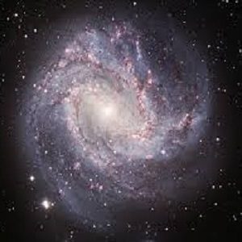
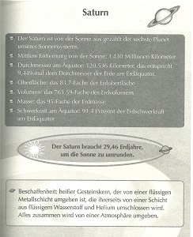
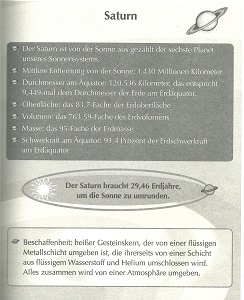

Happy anniversary

Autor: Stephen und Lucy Hawking
Verlag: CBJ
Erstes Erscheinungsdatum: 2007
Preis: 10€
Kurzbeschreibung:
Informationen über den Autor/die Autorin:
Stephen Hawking ist 1942 in Oxford, Großbritannien geboren. Er war Astrophysiker und seit 1979 der Inhaber des Lehrstuhls für Mathematik an der Universität Cambridge. Er lieferte bedeutende Arbeiten zur Kosmologie und wird heute als größter lebender theoretischer Physiker seit Einstein bezeichnet.
Steven Hawking veröffentlichte seit den 70er Jahren zahlreiche wissenschaftliche Werke. Durch das Buch „Eine kurze Geschichte der Zeit" ist er auch einem allgemeinen Publikum bekannt.
„Der geheime Schlüssel zum Universum“ ist sein erstes Kinderbuch. Schon als Student bekam er eine Nervenkrankheit, sodass er bald nicht mehr reden und laufen konnte und nur mit Hilfe eines Computers reden konnte. Er starb am 14. März 2018 im Alter von 76 Jahren in seinem Haus in Cambridge.
Stephen Hawkings Tochter half das Buch mitzuschreiben. Bevor sie Bücher schrieb, war sie Journalist bei folgenden Zeitungen und Zeitschriften: New York Magazine, Daily Mail, The Telegraph, The Times, London Evening Standard und The Guardian.
Kurzbeschreibung:
Das Buch beschreibt ein Abenteuer und handelt auch von der Physik des Universums. Der Hauptcharakter George, ein 10-jähriger Junge, begegnet dem Wissenschaftler Eric und dessen Tochter Annie. Sie haben einen Super-Computer Cosmos. Er ist der schlauste Computer der ganzen Welt und kann Personen ins Universum schicken.
In der ersten Reise ins Universum ist Eric mit George alleine ins Abenteuer gestürzt und sie beobachten dort die Entstehung eines Sternes. Zwei weitere spannende und gefährliche Reisen ins Weltall folgen. Bei der Begegnung mit einem schwarzen Loch geht es um Leben und Tod....
Im Buch werden "Wissensseiten” eingeschoben, in denen Grundwissen über das Universum beschrieben wird und beeindruckende Bilder gezeigt werden.
Kritik/Rezension/persönliche Stellungnahme:
Das Buch ist sehr spannend, aber manchmal beinhaltet es sehr viel Phantasie. Man muss zum Beispiel akzeptieren, dass ein Computer einen Menschen ins Weltall schicken kann. Deswegen empfehle ich das Buch nur Schülern, die Phantasie mögen.
Die Wissensseiten sind informativ und auf einem hohen Niveau, aber trotzdem verständlich und anschaulich. „Dafür, dass die Wissenschaft trotz der fantastischen Handlung korrekt ist, steht der Name Hawking. Das Buch ist auf einem aktuellen Stand der Planetenforschung.“, so die Zeit.
Wenn ihr das Buch durchgelesen habt und es euch gefallen hat, dann kann ich euch auch das Folgebuch "Die unglaubliche Reise ins Universum" weiterempfehlen.

 
